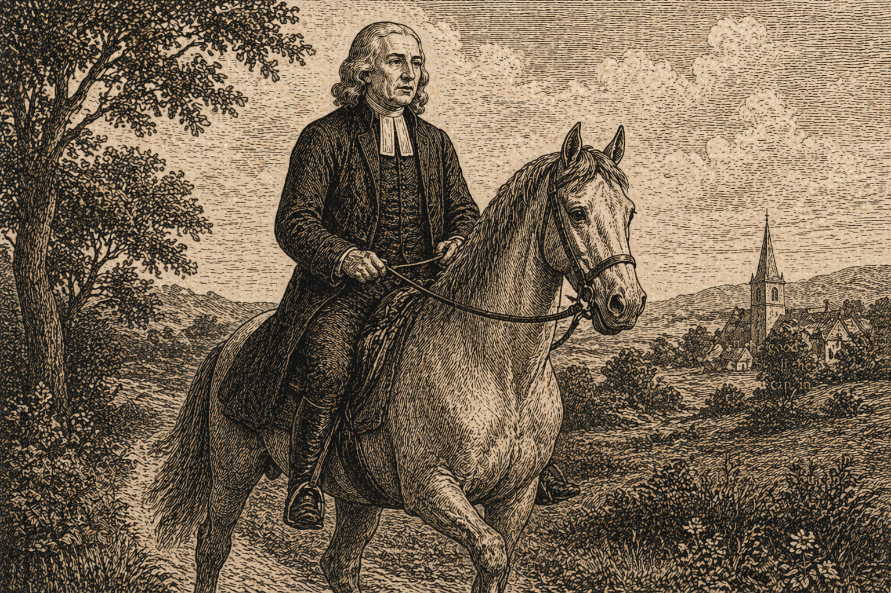

Проповідь 115 - Покликання до служіння
Переклад проповіді "The Ministerial Office".
Проповідь 115 - Покликання до служіння

4 травня 1789
Покликання до служіння
«А чести цієї ніхто не бере сам собою, а покликаний Богом, як і Аарон» (Євреїв 5:4).
-
Лише цим небагатьом місцям Святого Письма так часто дорікали мирянам, тобто тим, хто не є ні священиками, ні дияконами, коли вони бралися проповідувати. Багато хто запитував: «Як може людина сама взяти на себе цю честь, якщо не покликана Богом, як був покликаний Аарон?» І кілька років тому один побожний і розсудливий священнослужитель виголосив на ці слова проповідь, у якій намагався довести, що, як дехто собі уявляє, самого лише внутрішнього Божого покликання до проповіді недостатньо, якщо немає ще й зовнішнього покликання від людей, посланих Богом саме для цього, так само як Аарон був покликаний Богом через Мойсея.
-
Проте в цьому аргументі, хоч би як часто його повторювали, є одна серйозна помилка. Сказано: «Покликаний Богом, як і Аарон». Та Аарон узагалі не був проповідником: ні Бог, ні люди не кликали його на це служіння. Він був покликаний служити у святих речах — приносити молитви й жертви та виконувати священицьке служіння. Але проповідувати його ніхто не кликав.
-
У давнину священницьке служіння і служіння проповідника вважалися зовсім різними. І кожен, хто без упередження простежить це від початку, легко в цьому переконається. Від Адама до Ноя всі визнають, що первісток у кожній родині через право первородства був священиком своєї родини. Але це ще не давало йому права бути проповідником, або, мовою Писання, пророком. Це служіння нерідко отримував наймолодший у родині. Бо в цьому Бог завжди залишав за Собою право посилати того, через кого Сам хотів говорити.
-
Від Ноя аж до Мойсея бачимо те саме: найстарший у родині був священиком, але пророком міг бути й хтось інший. Саме священницьке право, як видно, належало Ісавові як первородному, доки він легковажно не продав його Якову за юшку. І після цього він уже не зміг його повернути, хоч і гірко шкодував та шукав цього зі сльозами.
-
Справді, за днів Мойсея у священстві сталася дуже велика зміна. Тоді Бог постановив, що замість первістка з кожного дому Йому буде присвячене ціле плем’я, і що всі, хто надалі служитиме Йому як священики, повинні бути з цього племени. Саме до нього належав Аарон, бо він був із племени Левія. І Мойсей теж був із цього племени. Але Мойсей не був священиком, хоч і був найбільшим із пророків, які жили до того, як Бог увів у світ Свого Первістка. Водночас лише небагато левітів були пророками, а якщо хтось із них і ставав пророком, то не тому, що був із цього племени, а лише з особливої Божої волі. Багато пророків, якщо не більшість, як свідчать давні юдейські письменники, походили з племени Симеона. Інші були з племени Веніямина або Юди, а, ймовірно, і з інших племен також.
-
Маємо підстави думати, що в кожну добу існували два роди пророків. Перші були надзвичайні, як Натан, Ісая, Єремія та багато інших, на яких Святий Дух сходив особливим, незвичайним чином. До таких належав, зокрема, Амос, який сам про себе каже: «Я не пророк, і не син я пророків, я пастух та оброблювач диких фіґовниць. І взяв мене Господь від отари, і промовив до мене Господь: Іди, пророкуй Моєму народові Ізраїлеві!» (Амоса 7:14-15). Другі були звичайні, тобто ті, кого виховували в «школах пророків», одна з яких була в Рамі під проводом Самуїла (1 Сам. 19:18). Їх готували для того, щоб навчати народ, і вони були звичайними проповідниками в синагогах. У Новому Завіті їх зазвичай називають «книжниками» або nomikoi, тобто «тлумачами Закону». Але мало хто з них, а можливо й ніхто, не був священиком, бо від самого початку це був окремий чин.
-
Багато вчених докладно показували, що наш Господь і Його апостоли влаштували Христову Церкву якомога ближче до взірця юдейської Церкви. Тому великий Первосвященик нашого визнання послав апостолів і євангелістів звіщати Євангеліє всьому світові, а згодом — пастирів, проповідників і вчителів, щоб утверджувати у вірі новопосталі громади. Але я ніде не знаходжу, щоб покликання євангеліста коли-небудь вважали тим самим, що й покликання пастиря, якого часто називали єпископом. Пастир або єпископ очолював громаду і звершував таїнства. Євангеліст же допомагав йому і проповідував Боже Слово — в одній громаді або в кількох. Я не можу довести ні з Нового Завіту, ні з творів авторів перших трьох століть, що служіння євангеліста давало людині право діяти як пастир чи єпископ. Навпаки, думаю, що ці служіння вважалися зовсім окремими аж до часу Костянтина.
-
Справді, у той лихий час, коли Костянтин Великий назвав себе християнином і щедро осипав християн почестями та багатством, усе різко змінилося. Невдовзі стало звичним, що одна людина брала на себе всю опіку над громадою, щоб отримувати всю винагороду. Через це одна й та сама особа почала виконувати і служіння священика, і служіння пророка, і пастиря, і євангеліста. Згодом це дедалі більше поширювалося по всій Христовій Церкві. Проте й досі, хоч одна й та сама людина часто виконує обидва служіння, служіння євангеліста чи вчителя саме по собі не означає служіння пастиря, якому належить звершувати таїнства. Так є і в пресвітеріан, і в Англіканській Церкві, і навіть у римо-католиків. Усі пресвітеріанські церкви, як добре відомо, зокрема й Шотландська, дозволяють людям проповідувати ще до рукоположення, по всій країні. Але ніколи не вважалося, що такий дозвіл на проповідь дає їм право звершувати таїнства. Так само і в нашій Церкві людину можуть уповноважити проповідувати, і вона навіть може бути доктором богослов’я, як доктор Олвуд в Оксфорді, коли я там жив, не будучи рукоположеною і тому не маючи права звершувати Господню Вечерю. Так само і в Римо-католицькій Церкві, якщо брат-мирянин вважає, що покликаний іти на так звану місію, його посилають саме на це служіння, хоч він не є ні священиком, ні дияконом, і не доручають йому нічого іншого.
-
Але чи не можна сказати, що випадок, про який ідеться тут, був зовсім особливим? Безперечно, у багатьох відношеннях так і було. У християнському світі з’явилося щось таке, чого не бачили вже багато століть. Двоє молодих людей почали сіяти Боже Слово не лише в церквах, а буквально і «при дорозі», тобто всюди, де тільки бачили відчинені двері і де були грішники, готові слухати. Вони залишалися членами Англіканської Церкви і не мали жодного наміру відділятися від неї. Навпаки, вони радили всім, хто належав до неї, і далі в ній залишатися, навіть якщо ті вступали до методистського товариства. Бо це означало не покинути свою Церкву, а покинути свої гріхи. Члени Англіканської Церкви могли й далі ходити до церкви; пресвітеріани, анабаптисти і квакери могли триматися своїх переконань і відвідувати власні зібрання. Єдиною умовою було щире бажання тікати від майбутнього гніву. Тому кожен, хто боявся Бога і прагнув чинити праведно, міг належати до цього товариства.
-
Невдовзі після цього один молодий чоловік, Томас Максфілд, запропонував себе нам як син у Євангелії. Потім так само зробив інший, Томас Річардс, а трохи пізніше й третій, Томас Вестелл. І тут слід добре звернути увагу, на яких саме умовах ми їх прийняли. Ми прийняли їх як пророків, а не як священиків. Тобто прийняли їх лише і тільки для проповіді, а не для звершення таїнств. І ті, хто уявляє, що ці два служіння нерозривно з’єднані, просто не знають устрою ні юдейської, ні християнської Церкви. Ані Римська, ані Англіканська, ані Пресвітеріанська Церкви ніколи так цього не розуміли. Інакше ми ніколи не прийняли би до служіння ні пана Максфілда, ні Річардса, ні Вестелла.
-
1744 року всі методистські проповідники зібралися на свою першу Конференцію. Але ніхто з них навіть не думав, що покликання до проповіді дає право звершувати таїнства. І коли тоді було поставлено запитання: «Як ми маємо дивитися на самих себе?» — відповідь прозвучала так: «Як на надзвичайних посланців, яких Бог підняв, щоб пробудити ревність у звичайних служителів». Саме тому одним із наших перших правил для кожного проповідника було: «Ти маєш виконувати ту частину праці, яку ми тобі доручимо». Але що це була за праця? Чи доручали ми вам коли-небудь звершувати таїнства, тобто виконувати священницьке служіння? Така думка ніколи навіть не спадала нам на гадку; вона була далекою від наших намірів. І якби якийсь проповідник самочинно наважився на це, ми розглядали би це як явне порушення нашого правила і, відповідно, як розрив єдності з нами.
-
Бо навіть якщо припустити, хоч я цього зовсім не визнаю, що саме прийняття вас як проповідника вже давало вам право звершувати таїнства, то й тоді це право не було би безмежним. Воно давало би вам право робити це лише там і тоді, де і коли я вас на це призначу. Але де я колись призначав вам це чинити? Ніде і ніколи. Отже, вже саме наше правило забороняє вам це робити. І якщо ви починаєте це робити, то цим самим відходите від першого принципу методизму, який полягав лише в одному — у проповіді Євангелія.
-
Минуло кілька років відтоді, як було створене наше товариство, перш ніж з’явилася бодай одна спроба такого роду. Наскільки я пам’ятаю, вперше це сталося в Норіджі. Один із наших проповідників там, поступившись наполегливим проханням кількох людей, охрестив їхніх дітей. Але щойно про це стало відомо, йому чітко дали зрозуміти, що так чинити не можна, якщо він не хоче вийти з нашої спільноти. Він пообіцяв більше цього не робити і, наскільки мені відомо, дотримав свого слова.
-
Поки методисти тримаються цього шляху, вони не можуть відокремитися від Церкви. Саме в цьому і є наша особлива риса. Це справді щось нове на землі. Перегляньте всю церковну історію від найдавніших часів — і побачите: щоразу, коли в якомусь місті чи країні починалося велике Боже діло, ті, хто ставали його учасниками, невдовзі починали говорити іншим: «Стійте осторонь, бо ми святіші за вас». А щойно вони відокремлювалися, то або йшли в пустелю, або будували монастирі, або принаймні створювали окремі групи, до яких не приймали нікого, хто не погоджувався з їхнім вченням і способом життя. Але з методистами не так. Вони не є сектою і не є окремою партією. Вони не відділяються від тієї церковної спільноти, до якої належали спочатку. Вони й далі лишаються членами Церкви, і такими хочуть жити й померти. І я думаю, що одна з причин, чому Бог так довго зберіг мені життя, полягає саме в тому, щоб утвердити їх у цьому теперішньому намірі — не відокремлюватися від Церкви.
-
Однак, попри все це, багато запальних людей кажуть: «Ні, ви все ж таки відокремлюєтеся від Церкви». Інші, не менш запальні, твердять, що я цього не роблю. Тому скажу просто і відкрито, як є насправді.
Я тримаюся всіх учень Англіканської Церкви. Я люблю її літургію. Я схвалюю її церковний лад і лише бажаю, щоб він справді виконувався. Я свідомо не відступаю від жодного церковного правила, хіба лише в кількох випадках, де, наскільки я розумію, існує безумовна потреба.
Наприклад: (1) Оскільки дуже мало священиків відчиняють для мене свої церкви, я змушений проповідувати просто неба.
(2) Оскільки я не знаю готових форм, які підходили би до всіх обставин, я часто змушений молитися без підготовленого тексту.
(3) Щоб зміцнювати Христову отару у вірі та любові, я змушений збирати її разом і ділити на невеликі групи, щоб люди в них могли заохочувати одне одного до любові та добрих діл.
(4) Щоб і я сам, і мої співпрацівники могли краще допомагати одне одному в спасінні власних душ і душ тих, хто нас слухає, я вважаю за потрібне збиратися з проповідниками, або принаймні з більшістю з них, раз на рік.
(5) На цих Конференціях ми визначаємо, де кожен проповідник служитиме протягом наступного року.
Усе це не є відокремленням від Церкви. Навпаки, коли маю змогу, я сам беру участь у богослужіннях Церкви і раджу всім нашим товариствам чинити так само.
-
Проте більшість людей, навіть побожних, які не розуміють моїх мотивів, з одного боку чують, як я кажу, що не відокремлююся від Церкви, а з другого бачать, що в цих окремих випадках я відступаю від її звичного порядку. Тому їм природно здається, ніби я непослідовний. І справді, вони так і думатимуть, якщо не візьмуть до уваги двох моїх принципів. Перший: я не смію відокремитися від Церкви, бо вважаю це гріхом. Другий: у певних випадках я так само вважаю гріхом не відступити від її звичного порядку. Отже, поєднайте ці два принципи: по-перше, я не відокремлююся від Церкви; по-друге, у випадках необхідності я відступаю від неї в окремих пунктах. Саме це я відкрито і постійно проголошую вже понад п’ятдесят років. І тоді уявна непослідовність зникає. Я лишався вірний цьому переконанню від 1730 року і донині.
-
«Але чи не суперечить вашому визнанню те, що в Дубліні дозволено проводити служіння під час церковних годин? Яка в цьому потреба і яку добру мету це має?» Вірю, що це служить кільком добрим цілям, яких інакше не вдалося би так добре досягти. Перша, як би дивно це не звучало, — запобігти відокремленню від Церкви. Багато хто з нашого товариства фактично вже були відокремлені від неї: вони зовсім не ходили до церкви. А тепер вони сумлінно відвідують церковне богослужіння першої неділі місяця. «Але чи не краще було би щонеділі?» Так, краще. Та хто зможе їх до цього схилити? Я — не можу. Я намагався робити це двадцять чи тридцять років, але без успіху. Друга мета — відвернути їх від дисидентських зібрань, які багато хто з них раніше постійно відвідував, а тепер зовсім залишив. Третя — щоб вони постійно чули здорове вчення, здатне спасти їхні душі.
-
Хотів би, щоб усі ви, кого звичайно називають методистами, серйозно зважили на все це. А особливо ви, кого Бог уповноважив кликати грішників до покаяння. Із цього зовсім не випливає, що ви маєте право хрестити чи звершувати Господню Вечерю. Ви самі й не думали про таке ані через десять, ані через двадцять років після того, як почали проповідувати. Ви не прагнули, як Корей, Датан і Авірон, здобути ще й священство. Ви знали: «Ніхто сам собі не бере цієї честі, а тільки той, хто покликаний Богом, як Аарон». Тож тримайтеся своєї межі, задовольняйтеся проповіддю Євангелія, «виконуйте працю євангелістів», звіщайте всьому світові доброту Бога, нашого Спасителя, і проголошуйте всім: «Наблизилося Царство Небесне; покайтеся і вірте в Євангеліє». Я щиро закликаю вас: залишайтеся на своєму місці, тримайтеся свого служіння. П’ятдесят років тому ви, ті з вас, хто вже тоді були методистськими проповідниками, були надзвичайними Божими посланцями: не самі пішли, а були висунуті вперед не для того, щоб замінити звичайних служителів, а щоб пробудити їх до ревності. В Ім’я Боже, залишайтеся на цьому місці. Своєю проповіддю і своїм прикладом спонукайте їх до любові й добрих діл. Ви є чимось новим на землі: товариством людей, які, не будучи ні сектою, ні окремою партією, є друзями для всіх і прагнуть допомогти всім зростати в релігії серця, у пізнанні й любові до Бога та людини. Ви самі були покликані всередині Англіканської Церкви. І хоч у вас є й будуть тисячі спокус залишити її та створити власну церкву, не піддавайтеся їм. Залишайтеся англіканами. Не відкидайте тієї особливої честі, яку Бог поклав на вас, і не руйнуйте задуму Провидіння, тобто саме тієї мети, заради якої Бог вас підняв.
-
Додам ще кілька слів до серйозних людей, які не належать до методистів, і особливо до тих, хто, як і ми, є вірними Англіканської Церкви. Чому ви мали би бути нами незадоволені? Ми не робимо вам жодного зла, не маємо наміру і не хочемо вас у чомусь образити. Ми тримаємося тих самих учень, що й ви, і дотримуємося церковних правил, можливо, навіть уважніше, ніж більшість людей у цьому краї. А дехто з вас — духовні особи. То чому саме ви мали би бути нами невдоволені? Ми не посягаємо ні на вашу добру славу, ні на ваші прибутки. Ми шануємо вас заради вашого служіння. І навіть якщо бачимо щось, чого не можемо схвалити, то не розголошуємо цього, а радше стараємося прикрити й не виставляти назовні. Коли ж ви поводитеся з нами немилостиво або несправедливо, ми це терпимо. «Коли нас лають — ми благословляємо» і не відповідаємо лихим словом на лихе слово. Тож нехай ваша рука не підіймається проти нас.
-
Ви, багаті цього світу, не вважайте нас своїми ворогами лише тому, що ми говоримо вам правду, можливо, ясніше й гостріше, ніж інші можуть або наважуються сказати. Саме тому ви особливо нас потребуєте. Таких друзів не купиш ні за які гроші. Ні ваше золото, ні ваше срібло не здатне їх придбати. Тож користуйтеся ними, доки маєте таку можливість. Якщо можете, ніколи не залишайтеся без когось, хто говоритиме вам правду від щирого серця. Інакше ви можете дожити до старості у своїх гріхах; можете говорити своїй душі: «Мир, мир», коли миру немає; можете спати і марити, ніби йдете до неба, аж поки не прокинетеся у вічному вогні.
-
А чи послухаєте ви, чи ні, ми, з Божої благодаті, підемо далі своїм шляхом. Ми самі й надалі залишатимемося членами Англіканської Церкви, як були від початку, але водночас прийматимемо як братів, сестер і матір усіх, хто любить Бога, хоч би до якої Церкви вони належали. І для єдності з нами ми не вимагаємо однакових поглядів чи однакового способу богослужіння, а лише того, щоб люди боялися Бога і чинили праведно, як уже було сказано. І це справді щось нове, нечуване в інших християнських спільнотах. У якій іще Церкві чи громаді по всьому християнському світу людей приймають на таких умовах, без інших вимог? Хто може, нехай покаже. Я не знаю жодної ні в Європі, ні в Азії, ні в Африці, ні в Америці. У цьому і полягає особливість методистів, і тільки їх. Вони самі не є окремою сектою чи партією, але приймають людей з усіх середовищ, якщо тільки вони пильнують чинити справедливо, любити милість і смиренно ходити зі своїм Богом.
Корк, 4 травня 1789 р.